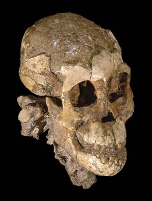

Fósiles de homínidos: Selam (DIK-1-1)

Descubierto por Zeresenay Alemseged en 2000 en Dikika, Etiopía (Alemseged et al. 2006). Se trata de un esqueleto parcial bien conservado de aproximadamente 3,3 millones de años de un niño de unos 3 años de Australopithecus afarensis. El fósil consiste en un cráneo casi completo, hueso hioides, fragmentos de extremidades, fragmentos de costillas, clavículas y escápulas, y algunas vértebras. Es el esqueleto juvenil de homínido más completo conocido hasta la época de los neandertales.Las características bípedas de otros fósiles de A. afarensis se encuentran principalmente en este fósil, confirmando que afarensis era bípedo. Sin embargo, existe un debate vigoroso sobre si la bipedestación era su método principal de locomoción o si se combinaba con una cantidad significativa de escalada en árboles (arborismo). Las características del cuerpo superior de Selam tienden a ser similares a las de los simios: la escápula se asemeja estrechamente a la de un gorila, los huesos de los dedos están curvados como en los chimpancés y los canales semicirculares son más similares a los de los chimpancés que a los de los humanos. Todas estas líneas de evidencia sugieren que A. afarensis era parcialmente arborícola.
El nombre 'Selam' significa 'paz' en el idioma local etíope. Debido a que pertenece a la misma especie que Lucy, el fósil también ha sido apodado 'el hijo de Lucy', aunque en realidad es aproximadamente 100.000 años más antiguo que Lucy.
Referencias
Alemseged Z., Spoor F., Kimbel W.H., Bobe R., Geraards D., Reed D. et al. (2006): Un esqueleto juvenil de homínido temprano de Dikika, Etiopía. Nature, 443:296-301.
Wood, B. (2006): Paleoantropología: un precioso pequeño paquete. Nature, 443:296-301. (el esqueleto de Dikika)
Esta página es parte del FAQ de Fósiles de Homínidos en el Archivo TalkOrigins.
Página de inicio |
Especies |
Fósiles |
Creacionismo |
Lectura |
Referencias
Ilustraciones |
Novedades |
Comentarios |
Búsqueda |
Enlaces |
Ficción
http://www.talkorigins.org/faqs/homs/selam.html, 11/29/2007
Copyright © Jim Foley
|| Envíame un correo